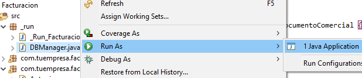
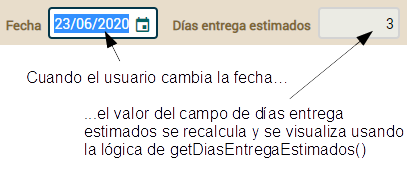

Curso:
1.
Primeros pasos |
2.
Modelar con Java |
3.
Pruebas automáticas |
4.
Herencia |
5. Lógica de negocio básica |
6. Validación avanzada |
7. Refinar el comportamiento
predefinido |
8.
Comportamiento y lógica de negocio |
9.
Referencias y colecciones |
A.
Arquitectura y filosofía |
B.
Java Persistence API |
C.
Anotaciones
Lección 5:
Lógica de negocio básica
Has convertido tu modelo del dominio en una aplicación web plenamente
funcional. Esta aplicación ya es bastante útil de por sí, aunque aún
puedes hacerle muchas mejoras. Transformemos pues tu aplicación en algo
más serio, y de paso, aprendamos algunas cosas interesantes sobre
OpenXava.
Empezaremos por añadir algo de lógica de negocio a tus entidades para
hacer de tu aplicación algo más que un simple gestor de base de datos.
Propiedades calculadas
Quizás la lógica de negocio más simple que puedes añadir a tu aplicación
es una propiedad calculada. Las propiedades que has usado hasta ahora son
persistentes, es decir, cada propiedad se almacena en una columna de una
tabla de la base de datos. Una propiedad calculada es una propiedad que no
almacena su valor en la base de datos, sino que se calcula cada vez que se
accede a la propiedad. Observa la diferencia entre una propiedad
persistente y una calculada:
// Propiedad persistente
private int cantidad; // Tiene un campo, por tanto es persistente
public int getCantidad() { // Un getter para devolver el valor del campo
return cantidad;
}
public void setCantidad(int cantidad) { // Cambia el valor del campo
this.cantidad = cantidad;
}
// Propiedad calculada
public int getImporte() { // No tiene campo, ni setter, solo un getter
return cantidad * precio; // con un cálculo
}
Las propiedades calculadas son reconocidas automáticamente por
OpenXava. Puedes usarlas en vistas, listas tabulares o cualquier otra
parte de tu código.
Vamos a usar propiedades calculadas para añadir el elemento “económico” a
nuestra aplicación
Facturacion. Porque, tenemos líneas de
detalle, productos, cantidades. Pero, ¿qué pasa con el dinero?
Propiedad
calculada simple
El primer paso será añadir una propiedad de importe a
Detalle.
Lo que queremos es que cuando el usuario elija un producto y teclea la
cantidad el importe de la línea sea recalculado y mostrado al usuario:

Añadir esta funcionalidad a tu actual código es prácticamente añadir una
propiedad calculada a
Detalle. Simplemente añade el código
siguiente a la clase
Detalle:
@Stereotype("DINERO")
@Depends("producto.numero, cantidad") // Cuando usuario cambie producto o cantidad
public BigDecimal getImporte() { // esta propiedad se recalculará y se redibujará
if (producto == null || producto.getPrecio() == null) return BigDecimal.ZERO;
return new BigDecimal(cantidad).multiply(producto.getPrecio());
}
Y los imports correspondientes:
import java.math.*;
import org.openxava.annotations.*;
Es tan solo poner el cálculo en
getImporte()
y usar
@Depends para indicar a OpenXava que la propiedad
importe
depende de
producto.numero y
cantidad, así cada vez
que el usuario cambia alguno de estos valores la propiedad se recalculará.
Ahora has de añadir esta nueva propiedad a la lista de propiedades
mostradas en la colección
detalles de
DocumentoComercial:
@ElementCollection
@ListProperties("producto.numero, producto.descripcion, cantidad, importe") // importe añadida
private Collection<Detalle> detalles;
Nada más. Tan solo necesitas añadir el getter y modificar la lista
de propiedades. Ahora puedes probar los módulos
Factura y
Pedido
para ver la propiedad
importe en acción.
Usar
@DefaultValueCalculator
La forma en que calculamos el importe de la línea de detalle no es la
mejor. Tiene, al menos, dos inconvenientes. El primero es que el usuario
puede querer tener la posibilidad de cambiar el precio unitario. Y
segundo, si el precio de un producto cambia los importes de todas las
facturas cambian también, y esto no es bueno.
Para evitar estos inconvenientes lo mejor es almacenar el precio de cada
producto en cada línea de detalle. Añadamos pues una propiedad persistente
precioPorUnidad a la clase
Detalle y calculemos su
valor desde
precio de
Producto usando un
@DefaultValueCalculator.
De tal forma que consigamos el efecto que puedes ver en la siguiente
figura:

El primer paso es obviamente añadir la propiedad
precioPorUnidad.
Añade el siguiente código a la clase
Detalle:
@DefaultValueCalculator(
value=CalculadorPrecioPorUnidad.class, // Esta clase calcula el valor inicial
properties=@PropertyValue(
name="numeroProducto", // La propiedad numeroProducto del calculador...
from="producto.numero") // ... se llena con el valor de producto.numero de la entidad
)
@Stereotype("DINERO")
private BigDecimal precioPorUnidad; // Una propiedad persistente convencional...
public BigDecimal getPrecioPorUnidad() { // ... con sus getter y setter
return precioPorUnidad == null ? BigDecimal.ZERO : precioPorUnidad; // así nunca devuelve nulo
}
public void setPrecioPorUnidad(BigDecimal precioPorUnidad) {
this.precioPorUnidad = precioPorUnidad;
}
CalculadorPrecioPorUnidad contiene la lógica para
calcular el valor inicial. Simplemente lee el precio del producto. Observa
el código de este calculador:
package com.tuempresa.facturacion.calculadores; // En el paquete calculadores
import org.openxava.calculators.*;
import com.tuempresa.facturacion.modelo.*;
import static org.openxava.jpa.XPersistence.*; //Para usar getManager()
public class CalculadorPrecioPorUnidad implements ICalculator {
private int numeroProducto;
@Override
public Object calculate() throws Exception {
Producto producto = getManager() // getManager() de XPersistence
.find(Producto.class, numeroProducto); // Busca el producto
return producto.getPrecio(); // Retorna su precio
}
public int getNumeroProducto() {
return numeroProducto;
}
public void setNumeroProducto(int numeroProducto) {
this.numeroProducto = numeroProducto;
}
}
También añade el siguiente import
en la clase Detalle:
import com.tuempresa.facturacion.calculadores.*;
De esta forma cuando el usuario
escoge un producto el campo de precio unitario se rellena con el precio
del producto, pero dado que es una propiedad persistente, el usuario puede
cambiar este valor. Y si en el futuro el precio del producto cambiara este
precio unitario de la línea de detalle no cambiaría.
Esto implica que has de adaptar la propiedad calculada
importe:
@Stereotype("DINERO")
@Depends("precioPorUnidad, cantidad") // precioPorUnidad en vez de producto.numero
public BigDecimal getImporte() {
// El if ya no es necesario porque getPrecioPorUnidad() nunca devuelve nulo
return new BigDecimal(cantidad).multiply(getPrecioPorUnidad()); // getPrecioPorUnidad() en vez de producto.getPrecio()
}
Ahora
getImporte() usa
precioPorUnidad como
fuente en lugar de
producto.precio.
Finalmente, debemos editar la entidad
DocumentoComercial y
modificar la lista de propiedades de la colección para mostrar la nueva
propiedad:
@ElementCollection
@ListProperties("producto.numero, producto.descripcion, cantidad, precioPorUnidad, importe") // precioPorUnidad añadida
private Collection<Detalle> detalles;
Prueba los módulos
Pedido y
Factura y podrás
observar el nuevo comportamiento al añadir líneas de detalle.
Propiedades
persistentes con @Calculation
A veces las propiedades calculadas no son la mejor opción. Imagínate que
tienes una propiedad calculada en
Factura, digamos
descuento:
// NO LO AÑADAS A TU CÓDIGO, ES SÓLO PARA ILUSTRAR
public BigDecimal getDescuento() {
return getImporte().multiply(new BigDecimal("0.10"));
}
Si necesitas procesar todas las facturas cuyo descuento sea mayor
de 1000, has de escribir un código como el siguiente:
// NO LO AÑADAS A TU CÓDIGO, ES SÓLO PARA ILUSTRAR
Query query = getManager().createQuery("from Factura"); // Sin condición en la consulta
for (Object o: query.getResultList()) { // Itera por todos los objetos
Factura f = (Factura) o;
if (f.getDescuento() // Pregunta a cada objeto
.compareTo(new BigDecimal("1000")) > 0) {
i.hacerAlgo();
}
}
No puedes usar una condición en la consulta para discriminar por
descuento,
porque
descuento no está en la base de datos, está sólo en el
objeto Java, por lo que has de instanciar todos y cada uno de los
objetos para poder preguntar por el
descuento. En algunos casos
esta forma es una buena opción, pero si tienes una cantidad inmensa de
facturas y sólo unas pocas tiene el
descuento mayor de 1000,
entonce tu proceso va a ser muy ineficiente. ¿Qué alternativas tenemos?
Nuestra alternativa es usar la anotación
@Calculation.
@Calculation
es una anotación OpenXava que permite asociar un cálculo simple a una
propiedad persistente. Puedes definir
descuento con
@Calculation
como se muestra en el siguiente código:
// NO LO AÑADAS A TU CÓDIGO, ES SÓLO PARA ILUSTRAR
@ReadOnly
@Calculation("importe * 0.10")
private BigDecimal descuento;
public BigDecimal getDescuento() {
return descuento;
}
public void setDescuento(BigDecimal descuento) {
this.descuento = descuento;
}
Esto es una propiedad persistente convencional, es decir con una
columna correspondiente en la base de datos, pero tiene un cálculo
definido con
@Calculation. En este caso el cálculo es
importe
* 0.10, de tal manera que cuando el usuario cambia
importe
en la interfaz de usuario
descuento se recalcula
instantaneamente. El valor recalculado se graba en la base de datos
cuando el usuario pulsa en Grabar, como con cualquier otra propiedad
persistente. También hemos anotado
descuento con
@ReadOnly,
por lo que parece y se comporta como una propiedad calculada, aunque
puedes omitir
@ReadOnly y así el usuario podría modificar el
valor calculado.
Lo más útil de las propiedades
@Calculation es que se pueden usar en las condiciones, por lo
que puedes reescribir el proceso de arriba como se muestra en el
siguiente código:
// NO LO AÑADAS A TU CÓDIGO, ES SÓLO PARA ILUSTRAR
Query query = getManager().createQuery("from Factura f where f.descuento > :descuento"); // Condición permitida
query.setParameter("descuento", new BigDecimal(1000));
for (Object o: query.getResultList()) { // Itera sólo por los objectos seleccionados
Factura f = (Factura) o;
f.hacerAlgo();
}
De esta manera ponemos el peso de seleccionar los registros en el
servidor de la base de datos y no en el servidor Java. Además, los
descuentos no se recalculan cada vez, sino que ya está calculados y
grabados.
Este hecho tiene también efecto en el modo lista, porque el usuario no
puede filtrar ni ordenar por las propiedades calculadas, pero sí que lo
puede hacer usando propiedades persistentes con
@Calculation:
 @Calculation
@Calculation es una buena opción cuando necesitas filtrar y
ordenar, y un cálculo simple es suficiente. Una desventaja de las
propiedades con
@Calculation es que sus valores se recalculan
sólo cuando el usuario interactúa con el registro y cambia algún valor
de las propiedades usadas en el cálculo, por lo tanto cuando añades una
nueva propiedad
@Calculation a una entidad con datos existente
has de actualizar los valores de la nueva columna en la tabla usando
SQL. Por otra parte si necesitas un cálculo complejo, con bucles o
consultando otras entidades, todavía sigues necesitando una propiedad
calculada con tu lógica Java en el getter. En este último caso si además
necesitas ordenar y filtrar en modo lista por la propiedad calculada un
opción es tener ambas, la calculada y la persistente, y sincronizar sus
valores usando los métodos de retrollamada de JPA (hablaremos sobre los
métodos de retrollamada más abajo).
Propiedades
de total de una colección
También queremos añadir importes a
Pedido y
Factura.
Tener IVA, importe base e importe total es indispensable. Para hacerlo
solo necesitas añadir unas pocas propiedades a la clase
DocumentoComercial.
La siguiente figura muestra la interfaz de usuario para estas propiedades:

Añade el siguiente código (y genera los getters y setters) a la entidad
DocumentoComercial:
@Digits(integer=2, fraction=0) // Para indicar su tamaño
private BigDecimal porcentajeIVA;
@ReadOnly
@Stereotype("DINERO")
@Calculation("sum(detalles.importe) * porcentajeIVA / 100")
private BigDecimal iva;
@ReadOnly
@Stereotype("DINERO")
@Calculation("sum(detalles.importe) + iva")
private BigDecimal importeTotal;
// RECUERDA GENERAR LOS GETTERS Y SETTERS PARA LOS CAMPOS DE ARRIBA
Para usar
BigDecimal y
@Digits deberías añadir los
siguientes imports a
DocumentoComercial:
import java.math.*;
import javax.validation.constraints.*;
Fíjate como hemos escogido
propiedades persistentes con
@Calculation + @ReadOnly en lugar de
propiedades calculadas para
iva e
importeTotal, porque los
cálculos son simples, y filtrar y ordenar por ellos es muy útil. También,
puedes ver como en
@Calculation puedes usar
sum(detalles.importe)
para referirte a la suma de columna
importe de la colección
detalles,
de esta manera podemos prescindir de una propiedad
importeBase.
Por otra parte,
porcentajeIVA es un propiedad persistente
convencional. En este caso usamos
@Digits (una anotación de Bean
Validation, el estándar de validación de Java) como una alternativa a
@Column
para especificar su tamaño.
Ahora que ya has escrito las propiedades para los importes de
DocumentoComercial,
tienes que modificar la lista de propiedades de la colección
detalles
para mostrar las
propiedades
de total de
DocumentoComercial. Veámoslo:
abstract public class DocumentoComercial extends Identificable {
@ElementCollection
@ListProperties(
"producto.numero, producto.descripcion, cantidad, precioPorUnidad, " +
"importe+[" +
"documentoComercial.porcentajeIVA," +
"documentoComercial.iva," +
"documentoComercial.importeTotal" +
"]"
)
private Collection<Detalle> detalles;
...
}
Las propiedades de total son propiedades normales de la entidad (
DocumentoComercial
en este caso) que en la interfaz de usuario se localizan debajo de una
columna de una colección. Para eso, en
@ListProperties se usan
corchetes después de la propiedad para enumerarlas, algo así como
importe[documentoComercial.importeTotal].
Además, si simplemente quieres la suma de la columna no necesitas una
propiedad para ello, con un + después de la propiedad en
@ListProperties
es suficiente, como
importe+. En nuestro caso combinamos ambas
cosas, + y propiedades de total entre [ ].
Ahora puedes probar tu aplicación.
Debería funcionar casi como en la figura del inicio de esta sección.
“Casi” porque
porcentajeIVA todavía no tiene un valor por
defecto. Lo añadiremos en la siguiente sección.
Valor
por defecto desde un archivo de propiedades
Es conveniente para el usuario tener el campo
porcentajeIVA
lleno por defecto con un valor adecuado. Podrías usar un calculador (
@DefaultValueCalculator)
que devuelva un valor fijo, pero en ese caso cambiar el valor por defecto
implica cambiar el código fuente. O podrías leer el valor por defecto de
una base de datos (usando JPA desde tu calculador), pero en ese caso
cambiar el valor por defecto implica actualizar la base de datos.
Otra opción es tener estos valores de configuración en un archivo de
propiedades, un archivo plano con pares clave=valor. En este caso cambiar
el valor por defecto de
porcentajeIVA es tan simple como editar
un archivo plano con un editor de texto.
Implementemos la opción del archivo de propiedades. Crea un archivo
llamado
facturacion.properties en la carpeta
Facturacion/properties
con el siguiente contenido:
porcentajeIVADefecto=21
Aunque puedes usar la clase
java.util.Properties de Java
para leer este archivo preferimos usar una clase propia para leer estas
propiedades. Vamos a llamar a esta clase
PreferenciasFacturacion
y la pondremos en un nuevo paquete llamado
com.tuempresa.facturacion.util.
Veamos el código:
package com.tuempresa.facturacion.util; // En el paquete 'util'
import java.io.*;
import java.math.*;
import java.util.*;
import org.apache.commons.logging.*;
import org.openxava.util.*;
public class PreferenciasFacturacion {
private final static String ARCHIVO_PROPIEDADES="facturacion.properties";
private static Log log = LogFactory.getLog(PreferenciasFacturacion.class);
private static Properties propiedades; // Almacenamos las propiedades aquí
private static Properties getPropiedades() {
if (propiedades == null) { // Usamos inicialización vaga
PropertiesReader reader = // PropertiesReader es una clase de OpenXava
new PropertiesReader(
PreferenciasFacturacion.class, ARCHIVO_PROPIEDADES);
try {
propiedades = reader.get();
}
catch (IOException ex) {
log.error(
XavaResources.getString( // Para leer un mensaje i18n
"properties_file_error",
ARCHIVO_PROPIEDADES),
ex);
propiedades = new Properties();
}
}
return propiedades;
}
public static BigDecimal getPorcentajeIVADefecto() { // El único método público
return new BigDecimal(getPropiedades().getProperty("porcentajeIVADefecto"));
}
}
Como puedes ver
PreferenciasFacturacion es una clase con
un método estático,
getPorcentajeIVADefecto(). La ventaja de
usar esta clase en lugar de leer directamente del archivo de propiedades
es que si cambias la forma en que se obtienen las preferencias, por
ejemplo leyendo de una base de datos o de un directorio LDAP, solo has de
cambiar esta clase en toda tu aplicación.
Puedes usar esta clase desde el calculador por defecto para la propiedad
porcentajeIVA.
Aquí tienes el código del calculador:
package com.tuempresa.facturacion.calculadores; // En el paquete 'calculadores'
import org.openxava.calculators.*; // Para usar 'ICalculator'
import com.tuempresa.facturacion.util.*; // Para usar 'PreferenciasFacturacion'
public class CalculadorPorcentajeIVA implements ICalculator {
@Override
public Object calculate() throws Exception {
return PreferenciasFacturacion.getPorcentajeIVADefecto();
}
}
Como ves, simplemente devuelve
porcentajeIVADefecto de
PreferenciasFacturacion.
Ahora, ya puedes usar este calculador en la definición de la propiedad
porcentajeIVA
en
DocumentoComercial. Mira el código:
@DefaultValueCalculator(CalculadorPorcentajeIVA.class)
private BigDecimal porcentajeIVA;
Con este código cuando el usuario pulsa para crear una nueva
factura, el campo
porcentajeIVA se rellenará con 21, o cualquier
otro valor que hayas puesto en
facturacion.properties.
Evolución
de esquema manual
Cuando usamos cosas como
@Calculation o
@DefaultValueCalculator
la evolución de esquema automática que provee OpenXava se nos queda corta,
porque añade una nueva columna cuando tu añades una nueva propiedad, pero
no rellena la columna con los valores correctos. En este caso hemos
añadido varias propiedades persistentes con
@Calculation cuyos
valores no se recalculan hasta que el usuario interactua con el registro.
Además, tenemos un valor por defecto para
porcentajeIVA que sólo
tiene efecto cuando el usuario crea un nuevo registro pero no en los
registros ya existentes. Hemos de rellenar las nuevas columnas con valores
razonables.
Dado que estamos en una etapa
temprana del desarrollo una buena opción sería borrar todos los
registros, pero es seguro que esto no es una buena idea para producción,
por tanto vamos a ajustar nuestra base de datos al nuevo código sin
perder información para ilustrar la evolución manual de esquema.
Lo más fácil es usar la propia
aplicación para hacer las actualizaciones. Vamos a hacerlo para
actualizar los precios de los productos. Para que las nuevas propiedades
calculadas funcionen bien todos los productos deberían tener un precio,
por tanto ve al módulo Producto con tu navegador y asegurate de
que todos los productos tienen precio:

Si algún producto no tiene
precio edítalo e introduce un precio.
Los siguientes cambios no son
tan sencillos, por lo que vamos a ejecutar sentencias SQL contra nuestra
base de datos. Para ejecutar estas sentencias SQL, primero asegurate de
que tu aplicación se está ejecutando, entonces ve a la clase DBManager
en Facturacion/src/_run, y con el botón derecho del artón escoge
Run As > Java Application:

Ahora estás listo para escribir y ejecutar SQLs. Primero, establecemos
el valor para la columna precioPorUnidad en todos los detalles:
UPDATE FACTURACION.DOCUMENTOCOMERCIAL_DETALLES
SET PRECIOPORUNIDAD = (
SELECT PRECIO FROM FACTURACION.PRODUCTO
WHERE NUMERO = PRODUCTO_NUMERO
)
Ahora actualizamos porcentajeIVA
para todas las facturas:
UPDATE FACTURACION.DOCUMENTOCOMERCIAL
SET PORCENTAJEIVA = 21
Lo siguiente es actualizar iva:
UPDATE FACTURACION.DOCUMENTOCOMERCIAL
SET IVA = (
SELECT SUM(PRECIOPORUNIDAD * CANTIDAD) * 0.21
FROM FACTURACION.DOCUMENTOCOMERCIAL_DETALLES D
WHERE D.DOCUMENTOCOMERCIAL_OID = DOCUMENTOCOMERCIAL.OID
)
Finalmente, actualizamos importeTotal
en todas las facturas:
UPDATE FACTURACION.DOCUMENTOCOMERCIAL
SET IMPORTETOTAL = (
SELECT SUM(PRECIOPORUNIDAD * CANTIDAD) * 1.21
FROM FACTURACION.DOCUMENTOCOMERCIAL_DETALLES D
WHERE D.DOCUMENTOCOMERCIAL_OID = DOCUMENTOCOMERCIAL.OID
)
Ten cuidado, las setencias de
arriba funciona bien con HSQLDB, la base de datos incluida con OpenXava.
Si usas otra base de datos probablemente tengas que adaptar la sintaxis.
Después de ejecutar estas sentencias puedes probar tu aplicación.
Debería funcionar como en la figura al principio de la sección
"Propiedades de total de una colección" incluso para facturas y pedidos
ya existentes.
Métodos de
retrollamadas JPA
Otra forma práctica de añadir lógica de negocio a tu modelo es mediante
los métodos de retrollamada JPA. Un método de retrollamada se llama en un
momento específico del ciclo de vida de la entidad como objeto
persistente. Es decir, puedes especificar cierta lógica a ejecutar al
grabar, leer, borrar o modificar una entidad.
En esta sección veremos algunas aplicaciones prácticas de los métodos de
retrollamada JPA.
Cálculo
de valor por defecto multiusuario
Hasta ahora estamos calculando el número para
Factura y
Pedido
usando
@DefaultValueCalculator. Éste calcula el valor por
defecto en el momento que el usuario pulsa para crear una nueva
Factura
o
Pedido. Por tanto, si varios usuarios pulsan en el botón
“nuevo” al mismo tiempo todos ellos obtendrán el mismo número. Esto no es
apto para aplicaciones multiusuario. La forma correcta de generar un
número único es generándolo justo en el momento de grabar.
Vamos a implementar la generación del número usando métodos de
retrollamada JPA. JPA permite marcar cualquier método de tu clase para ser
ejecutado en cualquier momento de su ciclo de vida. Indicaremos que justo
antes de grabar un
DocumentoComercial calcule su número. De paso
mejoraremos el cálculo para tener una numeración diferente para
Pedido
y
Factura.
Edita la entidad
DocumentoComercial y añade el método
calcularNumero().
Veamos el código:
@PrePersist // Ejecutado justo antes de grabar el objeto por primera vez
private void calcularNumero() {
Query query = XPersistence.getManager().createQuery(
"select max(f.numero) from " +
getClass().getSimpleName() + // De esta forma es válido para Factura y Pedido
" f where f.anyo = :anyo");
query.setParameter("anyo", anyo);
Integer ultimoNumero = (Integer) query.getSingleResult();
this.numero = ultimoNumero == null ? 1 : ultimoNumero + 1;
}
Para usar XPersistence has
de añadir este import:
import org.openxava.jpa.*;
Este código es el mismo que el de
CalculadorSiguienteNumeroParaAnyo pero usando
getClass().getSimpleName()
en lugar de "DocumentoComercial". El método
getSimpleName()
devuelve el nombre de la clase sin paquete, es decir, precisamente el
nombre de la entidad. Será "Pedido" para
Pedido y "Factura" para
Factura. Así podremos obtener una numeración diferente para
Factura
y
Pedido.
La especificación JPA establece que no puedes usar el API JPA dentro de un
método de retrollamada. Por tanto, el método de arriba no es legal desde
un punto de vista estricto. Pero, Hibernate (la implementación de JPA que
OpenXava usa por defecto) te permite usarla en
@PrePersist. Y
dado que usar JPA es la forma más fácil de hacer este cálculo, nosotros lo
usamos.
Ahora borra la clase
CalculadorSiguienteNumeroParaAnyo de tu
proyecto y modifica la propiedad
numero de
DocumentoComercial
para que no la use:
@Column(length = 6)
// @DefaultValueCalculator(value=CalculadorSiguienteNumeroParaAnyo.class, // Quita esto
// properties=@PropertyValue(name="anyo")
// )
@ReadOnly // El usuario no puede modificar el valor
private int numero;
Fíjate que además de quitar
@DefaultValueCalculator,
hemos añadido la anotación
@ReadOnly. Esto significa que el
usuario no puede introducir ni modificar este número. Esta es la forma
correcta de hacerlo ahora dado que el número es generado al grabar el
objeto, por lo que el valor que tecleara el usuario sería sobrescrito
siempre.
Prueba ahora el módulo de
Factura o
Pedido, verás como
el número está vacío y no es editable, y cuando grabes el documento, el
número se calcula y se muestra un mensaje con el año y el número recién
calculado para esa factura o pedido.
Sincronizar
propiedades persistentes y calculadas
Como ya hemos aprendido, las propiedades calculadas no permiten filtrar ni
ordenar en la lista, por lo que preferimos propiedades transitorias con
@Calculation.
Sin embargo, las propiedades
@Calculation sólo sirven para
cálculos aritméticos simples. Cuando necesitas bucles, condiciones, leer
de la base de datos, conectar a servicios externos or cualquier lógica
compleja,
@Calculation no es suficiente. Para estos casos
necesitas escribir la lógica con Java, en el getter. Pero, ¿cómo podemos
hacer esto y al mismo tiempo mantener la ordenación y el filtrado en la
lista? Fácil, puedes usar dos propiedades, una calculada y otra
persistente, y mantenerlas sincronizadas usando los métodos de
retrollamada de JPA. Vamos a aprender como hacerlo en esta sección.
Añadamos un nueva propiedad a la
entidad Pedido llamada diasEntregaEstimados:
@Depends("fecha")
public int getDiasEntregaEstimados() {
if (getFecha().getDayOfYear() < 15) {
return 20 - getFecha().getDayOfYear();
}
if (getFecha().getDayOfWeek() == DayOfWeek.SUNDAY) return 2;
if (getFecha().getDayOfWeek() == DayOfWeek.SATURDAY) return 3;
return 1;
}
Para usar DayOfWeek
añade el siguiente import en la parte de arriba de Pedido:
Esto es una propiedad calculada
pura, un getter con lógica Java. Calcula los día estimados de entrega
usando fecha como fuente. Este caso no puede solucionarse con @Calculation
que solo soporta operaciones aritméticas básicas.
También hemos de añadir diasEntregaEstimados
a la declaración de la @View por defecto en el código de Pedido:
@View(extendsView="super.DEFAULT",
members=
"diasEntregaEstimados," + // ADD THIS LINE
"factura { factura }"
)
...
public class Pedido extends CommercialDocument {
El resultado es este:

El valor se recalcula cada vez
que la fecha cambia en la interfaz de usuario gracias a el @Depends("fecha")
en diasEntregaEstimados. Todo esto está muy bien, pero cuando
vas a modo lista no puedes ordenar ni filtrar por los días de entrega
estimados. Para resolver este problema añadimos una segunda propiedad,
en esta ocasión una persistente.
Añade el siguiente código a tu
entidad Pedido:
@Column(columnDefinition="INTEGER DEFAULT 1")
private int diasEntrega;
public int getDiasEntrega() {
return diasEntrega;
}
public void setDiasEntrega(int diasEntrega) {
this.diasEntrega = diasEntrega;
}
Fíjate como hemos usado @Column(columnDefinition="INTEGER
DEFAULT 1"), con este truco cuando OpenXava crea la columna usa
"INTEGER DEFAULT 1" como definición de columna, así la nueva columna
tiene 1 como valor por defecto en lugar de nulo y evitamos un feo error
con nuestra propiedad int. Sí, en muchos casos @Column(columnDefinition=)
es una alternativa a hacer un UPDATE sobre la tabla (como hicimos en la
sección "Evolución de esquema manual"), aunque tiene el problema de que
es dependiente de la base de datos. De cualquier modo, esta disertación
sobre columnDefinition es tangencial a nuestro asunto sobre
sincronización entre propiedades calculadas y persistentes, @Column
no llega a ser necesario, simplemente es conveniente para nuestra
propiedad int.
Esta nueva propiedad
diasEntrega
contendrá el mismo valor que
diasEntregaEstimados, pero
diasEntrega
será persistente con su columna correspondiente en la base de datos. El
truco está en mantener sincronizada la propiedad
diasEntrega.
Usaremos los métodos de retrollamada de JPA en
Pedido para
conseguir esto. Es suficiente con asignar el valor de
diasEntregaEstimados
a
diasEntrega cada vez que un nuevo
Pedido se crea (
@PrePersist)
o modifica (
@PreUpdate).
Añade un método
recalcularDiasEntrega() a la entidad
Pedido
y anótalo con
@PrePersist y
@PreUpdate, así:
@PrePersist @PreUpdate
private void recalcularDiasEntrega() {
setDiasEntrega(getDiasEntregaEstimados());
}
Básicamente, el método
recalcularDiasEntrega() se llama
cada vez que la entidad
Pedido se registra en la base de datos
por primera vez y cuando se actualiza.
Puedes probar el módulo
Pedido con este código, y verás como
cuando un pedido se crea o modifica, la columna en la base de datos
diasEntrega
se actualiza correctamente después de grabar, lista para usar en procesos
masivos y disponible para filtrar y ordenar en la lista.
Lógica
desde la base de datos (@Formula)
Otra alternativa a
@Calculation, o a tener propiedades calculadas
y persistentes sincronizadas, es la anotación
@Formula.
@Formula
es una extensión de Hibernate al estándar JPA, que permite mapear una
propiedad a un fragmento de SQL. Por ejemplo, puedes definir
beneficioEstimado
con
@Formula en
DocumentoComercial como se muestra en el
siguiente código:
@org.hibernate.annotations.Formula("IMPORTETOTAL * 0.10") // El cálculo usando SQL
@Stereotype("DINERO")
private BigDecimal beneficioEstimado; // Un campo, como con una propiedad persistente
public BigDecimal getBeneficioEstimado() { // Sólo el getter es necesario
return beneficioEstimado;
}
Esto significa que cuando un
DocumentoComercial se lea
de la base de datos, el campo
beneficioEstimado se rellenerá con
el cálculo de
@Formula que es ejecutado por la base de datos. El
usuario puede filtrar y ordenar por las propiedades
@Formula en
modo lista, pero siempre son de solo lectura y no se recalculan en tiempo
real en modo detalle. Además, las propiedades
@Formula dependen de
la base de datos, porque podrías usar sintaxis sólo soportada por cierto
fabricante de base de datos.
Pruebas JUnit
Antes de ir a la siguiente lección, vamos a escribir el código JUnit para
ésta. Recuerda, el código no está terminado si no tiene pruebas JUnit.
Puedes escribir las pruebas antes, durante o después del código principal.
Pero siempre has de escribirlas.
El código de prueba mostrado aquí no es solo para darte un buen ejemplo,
sino también para enseñarte maneras de probar diferentes casos en tu
aplicación OpenXava.
Modificar
la prueba existente
Crear una nueva prueba para cada nuevo caso parece una buena idea desde un
punto de vista estructural, pero en la mayoría de los casos no es
práctico, porque de esa forma tu código de prueba crecerá muy rápido, y
con el tiempo, ejecutar todas las pruebas supondrá muchísimo tiempo.
El enfoque más pragmático es modificar el código de prueba existente para
cubrir todos los nuevos casos que hemos desarrollado. Hagámoslo de esta
forma.
En nuestro caso, la mayoría del código de esta lección aplica a
DocumentoComercial,
por tanto vamos a modificar el método
testCrear() de
PruebaDocumentoComercial
para ajustarlo a la nueva funcionalidad. Dejamos el método
testCrear()
tal como muestra el siguiente código:
public void testCrear() throws Exception {
login("admin", "admin");
calcularNumero(); // Añadido para calcular primero el siguiente número de documento
verificarValoresDefecto();
escogerCliente();
anyadirDetalles();
ponerOtrasPropiedades();
grabar();
verificarBeneficioEstimado(); // Prueba @Formula
verificarCreado();
borrar();
}
Como ves, añadimos una nueva línea, después de
login(...),
para calcular el siguiente número de documento, y una llamada al nuevo
método
verificarBeneficioEstimado().
Ahora nos conviene más calcular el siguiente número de documento al
principio para usarlo en el resto de la prueba. Para hacer esto, cambia el
viejo método
getNumero() por los dos métodos mostrados en el
siguiente código:
private void calcularNumero() {
Query query = getManager().createQuery(
"select max(f.numero) from " +
modelo + // Cambiamos DocumentoComercial por una variable
" f where f.anyo = :anyo");
query.setParameter("anyo", LocalDate.now().getYear());
Integer ultimoNumero = (Integer) query.getSingleResult();
if (ultimoNumero == null) ultimoNumero = 0;
numero = Integer.toString(ultimoNumero + 1);
}
private String getNumero() {
return numero;
}
Anteriormente, teníamos solo
getNumero() que calculaba y
devolvía el número, ahora tenemos un método para calcular (
calcularNumero()),
y otro para devolver el resultado (
getNumero()). Puedes notar que
la lógica del cálculo tiene un pequeño cambio, en vez de usar
“DocumentoComercial” como fuente de la consulta usamos
modelo, una
variable. Esto es así porque ahora la numeración para facturas y pedidos
está separada. Llenamos esta variable, un campo de la clase de prueba, en
el constructor, tal como muestra el siguiente código:
private String modelo; // Nombre del modelo para la condición. Puede ser 'Factura' o 'Pedido'
public PruebaDocumentoComercial(String nombrePrueba, String nombreModulo) {
super(nombrePrueba, "Facturacion", nombreModulo);
this.modelo = nombreModulo; // El nombre del módulo coincide con el del modelo
}
En este caso el nombre de módulo,
Factura o
Pedido,
coincide con el nombre de modelo,
Factura o
Pedido,
así que la forma más fácil de obtener el nombre de modelo es desde el
nombre de módulo.
Veamos el código que prueba la nueva funcionalidad.
Verificar
valores por defecto, propiedades calculadas y @Calculation
En esta lección hemos hecho algunas modificaciones en los valores por
defecto. Ahora, el valor por defecto para
numero ya no se
calcula mediante un
@DefaultValueCalculator en su lugar usamos
un método de retrollamada JPA. Para probar este caso hemos de modificar el
método
verificarValoresDefecto() como ves en el siguiente
código:
private void verificarValoresDefecto() throws Exception {
execute("CRUD.new");
assertValue("anyo", getAnyoActual());
// assertValue("numero", getNumero()); // Ahora el número no tiene valor inicial...
assertValue("numero", ""); // ... al crear un documento nuevo
assertValue("fecha", getFechaActual());
}
Verificamos que
numero no tiene valor inicial, porque
ahora
numero no se calcula hasta el momento de grabar el
documento (sección
Cálculo
de valor por defecto multiusuario). Cuando el documento (factura o
pedido) se grabe verificaremos que
numero se calcula.
Cuando la línea se añade podemos
verificar el cálculo de
importe de
detalle (la
propiedad calculada simple, sección
Propiedad
calculada simple), el valor por defecto para
precioPorUnidad
(
@DefaultValueCalculator, sección
Usar
@DefaultValueCalculator) y las propiedades de importes del documento
(sección
Propiedades
de total de una colección). Entre las propiedades de total probamos
porcentajeIVA cuyo valor por defecto se calcula leyendo de un
archivo de propiedades. Todo esto lo probamos haciendo unas ligeras
modificaciones en el ya existente método
anyadirDetalles():
private void anyadirDetalles() throws Exception {
assertCollectionRowCount("detalles", 0);
// Antes de ejecutar esta prueba asegurate de que
// producto 1 tenga 19 como precio y
// producto 2 tenga 20 como precio
// Añadir una línea de detalle
setValueInCollection("detalles", 0, "producto.numero", "1");
assertValueInCollection("detalles", 0,
"producto.descripcion", "Peopleware: Productive Projects and Teams");
assertValueInCollection("detalles", 0,
"precioPorUnidad", "19,00"); // @DefaultValueCalculator
setValueInCollection("detalles", 0, "cantidad", "2");
assertValueInCollection("detalles", 0,
"importe", "38,00"); // Propiedada calculada, sección 'Propiedad calculada simple'
// Verificando propiedades de total de la colección
assertTotalInCollection("detalles", 0, "importe", "38,00"); // Suma de importes usando +
assertTotalInCollection("detalles", 1, "importe", "21"); // Valor por defecto desde un archivo de propiedades
assertTotalInCollection("detalles", 2, "importe", "7,98"); // IVA, con @Calculation
assertTotalInCollection("detalles", 3, "importe", "45,98");
// Añadir otro detalle
setValueInCollection("detalles", 1, "producto.numero", "2");
assertValueInCollection("detalles", 1, "producto.descripcion", "Arco iris de lágrimas");
assertValueInCollection("detalles", 1,
"precioPorUnidad", "20,00");
setValueInCollection("detalles", 1, "precioPorUnidad", "10,00"); // Modificando el valor pode defecto
setValueInCollection("detalles", 1, "cantidad", "1");
assertValueInCollection("detalles", 1, "importe", "10,00");
assertCollectionRowCount("detalles", 2);
// Verificando propiedades de total de la colección
assertTotalInCollection("detalles", 0, "importe", "48,00");
assertTotalInCollection("detalles", 1, "importe", "21");
assertTotalInCollection("detalles", 2, "importe", "10,08");
assertTotalInCollection("detalles", 3, "importe", "58,08");
}
ME QUEDÉ POR AQUÍ: REVISAR EL CODIGO DE ARRIBA UNA VEZ MÁS
(COMPARARLO CON INGLES) Como ves, con estas modificaciones sencillas
probamos la mayoría de nuestro nuevo código. Nos quedan sólo las
propiedades
importe y
beneficioEstimado. Las cuales
probaremos en la siguiente sección.
Sincronización
entre propiedad persistente y calculada / @Formula
En la sección
Sincronizar
propiedades persistentes y calculadas usamos métodos de retrollamada
de JPA en
DocumentoComercial para tener una propiedad
persistente,
importe, sincronizada con una calculada,
importeTotal.
La propiedad
importe solo se muestra en modo lista.
En la sección
Lógica
desde la base de datos hemos creado una propiedad que usa
@Formula,
beneficioEstimado. Esta propiedad se muestra solo en modo lista.
Obviamente, la forma más simple de probarlo es yendo a modo lista y
verificando que los valores para estas dos propiedades son los esperados.
En
testCrear() llamamos a
verificarImporteYBeneficioEstimado().
Veamos su código:
private void verificarImporteYBeneficioEstimado() throws Exception {
execute("Mode.list"); // Cambiar a modo lista
setConditionValues(new String [] { // Filtra para ver en la lista solamente
getAnyoActual(), getNumero() // el documento que acabamos de crear
});
execute("List.filter"); // Hace filtro
assertValueInList(0, 0, getAnyoActual()); // Verifica que
assertValueInList(0, 1, getNumero()); // el filtro ha funcionado
assertValueInList(0, "importe", "84,96"); // Confirma el importe
assertValueInList(0, "beneficioEstimado", "8,50"); // Confirma el beneficio estimado
execute("List.viewDetail", "row=0"); // Va a modo detalle
}
Dado que ahora vamos a modo lista y después volvemos a detalles,
hemos de hacer una pequeña modificación en el método
verificarCreado(),
que es ejecutado justo después de
verificarImporteYBeneficioEstimado().
Veamos la modificación:
private void verificarCreado() throws Exception {
// setValue("anyo", getAnyoActual()); // Borramos estas líneas
// setValue("numero", getNumero()); // para buscar el documento
// execute("CRUD.refresh"); // porque ya lo hemos buscado desde el modo lista
// El resto de la prueba ...
...
Quitamos estas líneas porque ahora no es necesario buscar el
documento recién creado. Ahora en el método
verificarImporteYBeneficioEstimado()
vamos a modo lista y escogemos el documento, por tanto ya estamos editando
el documento.
¡Enhorabuena! Ahora tus pruebas ya están sincronizadas con tu código. Es
un buen momento para ejecutar todas las pruebas de tu aplicación.
Resumen
En esta lección has aprendido algunas formas comunes de añadir lógica de
negocio a tus entidades. No hay duda sobre la utilidad de las propiedades
calculadas, los métodos de retrollamada o
@Formula. Sin embargo,
todavía tenemos muchas otras formas de añadir lógica a tu aplicación
OpenXava, que vamos a aprender a usar.
En futuros lecciones verás como añadir validación, modificar el
funcionamiento estándar del módulo y añadir tu propia lógica de negocio,
entre otras formas de añadir lógica personalizada a tu aplicación.
Descargar código fuente de esta lección
¿Problemas con la lección? Pregunta en el foro ¿Ha ido bien?
Ve a la lección 6